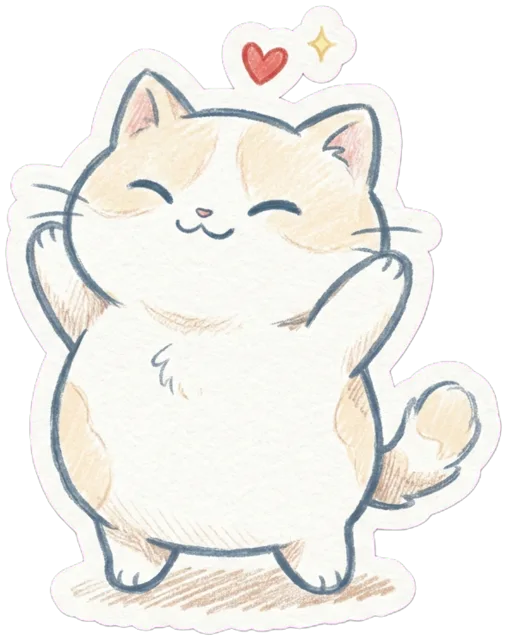

<!doctype html>
<html lang="th">
<meta charset="utf-8">
<meta name="viewport" content="width=device-width,initial-scale=1">
<title>DiaGlance</title>
<link rel="stylesheet" href="https://fonts.googleapis.com/css2?family=Noto+Sans+Thai:wght@400;600&family=Sriracha&display=swap">
<style>
:root{--bg:#f3f2f1;--fg:#161616;--opt:#fff;--bd:#aaa;--mut:#777;--pri:#000;--on:#fff;--track:#fff;--fill:#a0a0a0}
[data-theme=dark]{--bg:#161616;--fg:#f3f2f1;--opt:#232323;--bd:#5a5a5a;--mut:#999;--pri:#f3f2f1;--on:#161616;--track:#2a2a2a;--fill:#8a8a8a}
*{box-sizing:border-box}body{margin:0;background:var(--bg);color:var(--fg);font:17px/1.7 "Noto Sans Thai",system-ui,sans-serif}
main{position:relative;max-width:480px;margin:0 auto;padding:28px 16px 40px}
h1{font-size:1.15rem;font-weight:600;letter-spacing:.04em;text-align:center;margin:8px 0 24px}
h2{font-size:1.15rem;font-weight:600;text-align:center;margin:0 0 20px;line-height:1.6}
.sub{text-align:center;color:var(--mut);margin:0 0 8px}
.card{margin:36px 0}.card p{margin:10px 0}
.opt{display:block;position:relative}.opt input{position:absolute;opacity:0}
.opt span{display:block;padding:12px 18px;margin:10px 0;background:var(--opt);border:1px solid var(--bd);border-radius:999px;cursor:pointer;text-align:center;transition:.15s}
.opt span:hover{border-color:var(--fg)}
.opt input:checked+span{background:var(--pri);border-color:var(--pri);color:var(--on)}
.opt input:focus-visible+span{outline:2px solid var(--fg);outline-offset:3px}
.chk span{border-radius:22px}
button{display:block;width:auto;min-width:160px;height:48px;margin:20px auto 0;padding:0 28px;font:inherit;color:var(--on);background:var(--pri);border:0;border-radius:999px;cursor:pointer}
button:disabled{opacity:.3;cursor:default}
button.ghost{min-height:44px;height:auto;min-width:0;margin:4px auto 0;padding:10px 24px;background:none;color:var(--mut)}
button.ghost:hover{text-decoration:underline}
#t,#lg{position:absolute;top:20px;right:12px;min-width:0;width:40px;height:40px;margin:0;padding:0;background:none;color:var(--fg);border:1px solid var(--bd);font-size:1.1rem}
input[type=number]{width:100%;padding:12px 16px;font:inherit;color:var(--fg);background:var(--opt);border:1px solid var(--bd);border-radius:999px;text-align:center}
input[type=number]:focus{outline:none;border-color:var(--fg)}
.row{display:flex;gap:10px}.row label{flex:1;font-size:.9rem;color:var(--mut)}
.formula{background:var(--opt);border:1px solid var(--bd);border-radius:20px;padding:10px 16px;font-size:.9rem;margin:0 0 16px}
.bar{height:8px;background:var(--track);border-radius:4px;overflow:hidden;margin-bottom:24px}.bar i{display:block;height:100%;background:var(--fill);border-radius:4px;transition:width .3s}
.big{font-size:4rem;font-weight:600;text-align:center;line-height:1.2}.c{text-align:center}.mut{color:var(--mut);font-size:.85rem}
ul{padding-left:1.2em;margin:6px 0}li{margin:2px 0}
table{width:100%;border-collapse:collapse;font-size:.85rem}td,th{padding:8px 4px;border-bottom:1px solid var(--bd);text-align:left;vertical-align:top}
button.alt{background:none;color:var(--fg);border:1px solid var(--bd);min-width:0}
.btns{display:flex;flex-wrap:wrap;gap:10px;justify-content:center;align-items:center;margin:20px 0}.btns button{margin:0}
.hero{text-align:center;padding:36px 0 24px}.hero h2{font-size:2rem;line-height:1.35;margin:0 0 14px;text-wrap:balance}.hero p{color:var(--mut);margin:0 auto;max-width:28em;text-wrap:balance}
.info{border-top:1px solid var(--bd);padding:22px 0 6px}.info h3{font-size:.8rem;font-weight:600;color:var(--mut);margin:0 0 8px}.info p{margin:8px 0}
#card{width:100%;display:block;border-radius:24px;margin:8px 0}
details{margin:20px 0}summary{cursor:pointer;color:var(--mut);text-align:center}
#lg{right:auto;left:12px;font-size:.8rem;letter-spacing:.04em}
.cats{display:flex;justify-content:center;align-items:flex-end;gap:14px;margin:28px 0 4px}.cats img{height:76px;width:auto;display:block}
.hero img.big-cat{display:block;margin:0 auto 10px;height:230px;width:auto}
</style>
<main>
<button id="lg" aria-label="Language"></button>
<button id="t" aria-label="Dark / light"></button>
<h1>DiaGlance</h1>
<div id="app"></div>
<p class="mut c" id="foot"></p>
</main>
<script src="model.js"></script>
<script>
// ---------- ภาษา / ธีม ----------
const root = document.documentElement, T = document.getElementById('t'), LG = document.getElementById('lg');
let theme, lang; try { theme = localStorage.theme; lang = localStorage.lang; } catch {}
theme = theme || (matchMedia('(prefers-color-scheme:dark)').matches ? 'dark' : 'light'); lang = lang === 'en' ? 'en' : 'th';
const tx = (th, en) => lang === 'en' ? en : th;   // เลือกข้อความตามภาษา
const STR = {
  th: {
    title: 'DiaGlance – เช็กความเสี่ยงเบาหวานแบบสบายๆ', foot: 'ทำเพื่อการเรียนรู้ ไม่ใช่การวินิจฉัยทางการแพทย์ · คำตอบไม่ถูกส่งออกจากเครื่องคุณ',
    heroH: 'เช็กความเสี่ยงเบาหวาน<br>แบบสบายๆ', heroP: n => `ตอบ ${n} ข้อสั้นๆ ไม่ถึง 3 นาที แล้วดูว่าโอกาสเป็นเบาหวานของคุณสูงหรือต่ำกว่าคนทั่วไปแค่ไหน พร้อมการ์ดสรุปผลน่ารักๆ ไว้แชร์`, start: 'เริ่มเลย',
    i1: 'เบาหวานคืออะไร', i1a: 'โรคที่น้ำตาลในเลือดสูงเรื้อรัง เพราะร่างกายสร้างอินซูลินไม่พอ หรือใช้อินซูลินได้ไม่ดี ชนิดที่พบบ่อยที่สุดคือ <b>ชนิดที่ 2</b> ซึ่งเกี่ยวกับน้ำหนัก การกิน และการใช้ชีวิต',
    i1b: 'ตามไฟล์สรุปของโครงงานนี้ คนไทยเป็นกันราว <b>1 ใน 10</b> (10.1%) และหลายคน<b>ไม่รู้ตัว</b> เพราะช่วงแรกแทบไม่มีอาการ', i1c: 'อาการที่พบได้: หิวน้ำบ่อย ปัสสาวะบ่อย เหนื่อยง่าย แผลหายช้า น้ำหนักลดโดยไม่รู้สาเหตุ',
    i2: 'เว็บนี้ทำอะไร', i2a: 'เรานำข้อมูลสำรวจสุขภาพจริงราว 7.5 แสนคน มาดูว่า <b>คนที่เป็นเบาหวานมีลักษณะแบบคุณบ่อยกว่าคนที่ไม่เป็นแค่ไหน</b> แล้วใช้ความน่าจะเป็น (กฎของเบย์) ปรับโอกาสขึ้นหรือลงทีละข้อ จนได้ตัวเลขสุดท้าย พร้อมบอกว่าข้อไหนมีผลมากที่สุด',
    i2b: 'ผลที่ได้เป็นแค่ภาพรวมเพื่อการเรียนรู้ ไม่ได้นับประวัติครอบครัวหรือผลเลือดจริง ถ้ากังวลควรตรวจน้ำตาลในเลือดกับแพทย์',
    skip: 'ไม่ทราบ / ข้าม', back: '← ย้อนกลับ', next: 'ต่อไป', formula: 'สูตร: BMI = น้ำหนัก (กก.) ÷ ส่วนสูง (ม.)²<br>เช่น 60 กก. สูง 1.60 ม. → 60 ÷ 2.56 = 23.4', hgt: 'ส่วนสูง (ซม.)', wgt: 'น้ำหนัก (กก.)', yourBmi: 'BMI ของคุณ',
    histT: 'เคยมีหมอบอกไหมว่ามีเรื่องสุขภาพเหล่านี้? (เลือกได้หลายข้อ)', none: 'ไม่มีเลย',
    HL: { heart: 'โรคหัวใจ หรือเคยหัวใจวาย', stroke: 'โรคหลอดเลือดสมอง (อัมพฤกษ์ อัมพาต)', kidney: 'โรคไต', asthma: 'หอบหืด', skin: 'มะเร็งผิวหนัง' },
    making: 'กำลังสร้างรูปสรุป…', save: 'บันทึกรูป / แชร์', copy: 'คัดลอกสรุป', copied: 'คัดลอกแล้ว ✓', copyPrompt: 'คัดลอกข้อความนี้', again: 'ทำใหม่อีกครั้ง',
    up: 'ดันความเสี่ยงขึ้น', down: 'ช่วยลดความเสี่ยง', all: 'ดูรายละเอียดทุกข้อ', thF: 'ปัจจัย', thA: 'คำตอบ', thM: 'เท่าตัว*', noAns: 'ไม่ได้ตอบข้อใดเลย', assumed: '(ค่าสมมติ)', yes: 'มี', no: 'ไม่มี',
    note1: '*P(x|เป็นเบาหวาน) ÷ P(x|ไม่เป็น) — มากกว่า 1 เพิ่มความเสี่ยง น้อยกว่า 1 ลดความเสี่ยง', note2: n => `คำนวณด้วย Naive Bayes จาก BRFSS 2020+2022 (${n} คน สหรัฐฯ ไม่ใช่ข้อมูลไทย)`,
    note3: 'ข้อสูบบุหรี่/แอลกอฮอล์/ออกกำลังกาย/การเดิน: ข้อมูลเก็บแค่ ใช่-ไม่ใช่ จึงรวมตัวเลือกของคุณเป็น 2 กลุ่มก่อนคำนวณ', note4: 'ปัจจัยกินหวาน (ค่าสมมติ): ข้อมูลชุดนี้ไม่มีตัวแปรนี้ จึงใช้ตัวเลขตัวอย่างจากไฟล์สรุปแทน',
    alcNote: 'หมายเหตุ: ผลของข้อแอลกอฮอล์สะท้อนความสัมพันธ์ในข้อมูลสำรวจ (คนที่เป็นเบาหวานแล้วมักลดการดื่มลง) ไม่ได้แปลว่าการดื่มหนักช่วยป้องกันเบาหวาน',
    sumTop: (p, b, lv) => `DiaGlance: โอกาสเป็นเบาหวาน ${p} (คนทั่วไป ${b}) · ${lv}`, disc: '(เพื่อการเรียนรู้ ไม่ใช่การวินิจฉัยทางการแพทย์)',
    cChance: 'โอกาสเป็นเบาหวาน', cAvg: p => 'คนทั่วไป ' + p, cGang: 'แก๊งเหมียว',
  },
  en: {
    title: 'DiaGlance – a relaxed diabetes risk check', foot: 'For learning only, not medical advice · Your answers never leave your device',
    heroH: 'Check your diabetes risk<br>the easy way', heroP: n => `Answer ${n} quick questions in under 3 minutes and see whether your chance of diabetes is higher or lower than the average person's — plus a cute result card to share.`, start: 'Start',
    i1: 'WHAT IS DIABETES', i1a: `A long-term condition where blood sugar stays too high because the body doesn't make enough insulin or can't use it well. The most common kind is <b>type 2</b>, which is linked to weight, diet and lifestyle.`,
    i1b: `According to this project's summary file, about <b>1 in 10</b> Thai people (10.1%) have it, and many <b>don't know</b> because early on there are almost no symptoms.`, i1c: 'Possible signs: frequent thirst, frequent urination, tiredness, slow-healing wounds, unexplained weight loss.',
    i2: 'WHAT THIS SITE DOES', i2a: `We take real health-survey data from about 750,000 people and ask: <b>how much more often do people with diabetes look like you than people without it?</b> Then we use probability (Bayes' rule) to nudge your chance up or down, answer by answer, to a final number — and show which answers mattered most.`,
    i2b: `This is only a rough overview for learning. It doesn't count family history or real blood tests. If you're worried, get a blood-sugar test with a doctor.`,
    skip: `Don't know / Skip`, back: '← Back', next: 'Next', formula: 'Formula: BMI = weight (kg) ÷ height (m)²<br>e.g. 60 kg at 1.60 m → 60 ÷ 2.56 = 23.4', hgt: 'Height (cm)', wgt: 'Weight (kg)', yourBmi: 'Your BMI',
    histT: 'Has a doctor ever told you that you have any of these? (select all that apply)', none: 'None of these',
    HL: { heart: 'Heart disease or a heart attack', stroke: 'Stroke (paralysis)', kidney: 'Kidney disease', asthma: 'Asthma', skin: 'Skin cancer' },
    making: 'Making your card…', save: 'Save image / Share', copy: 'Copy summary', copied: 'Copied ✓', copyPrompt: 'Copy this text', again: 'Start over',
    up: 'Pushing risk up', down: 'Helping lower risk', all: 'See every answer', thF: 'Factor', thA: 'Answer', thM: 'Multiplier*', noAns: 'No questions answered', assumed: '(assumed)', yes: 'Yes', no: 'No',
    note1: '*P(x | diabetes) ÷ P(x | no diabetes) — above 1 raises risk, below 1 lowers it', note2: n => `Computed with Naive Bayes from BRFSS 2020+2022 (${n} people; US data, not Thai)`,
    note3: 'Smoking / alcohol / exercise / walking: the data only has yes-or-no, so your choice is merged into 2 groups before computing', note4: 'Sugar factor (assumed): this dataset has no such variable, so example numbers from the summary file are used instead',
    alcNote: 'Note: the alcohol result reflects a pattern in the survey data (people already diagnosed with diabetes tend to cut back on drinking). It does not mean heavy drinking protects against diabetes.',
    sumTop: (p, b, lv) => `DiaGlance: diabetes chance ${p} (average ${b}) · ${lv}`, disc: '(For learning only, not medical advice)',
    cChance: 'Diabetes chance', cAvg: p => 'Average ' + p, cGang: 'The kitty gang',
  },
};
const L = () => STR[lang];
const paint = () => { root.dataset.theme = theme; root.lang = lang; document.title = L().title; T.textContent = theme === 'dark' ? '☀' : '☾'; LG.textContent = lang === 'th' ? 'EN' : 'ไทย'; document.getElementById('foot').textContent = L().foot; };
let rerender, view = 'home';   // rerender: ตั้งค่าตอนอยู่หน้าผลลัพธ์ เพื่อวาดการ์ดใหม่เมื่อสลับธีม
T.onclick = () => { theme = theme === 'dark' ? 'light' : 'dark'; try { localStorage.theme = theme; } catch {} paint(); rerender?.(); };
LG.onclick = () => { lang = lang === 'th' ? 'en' : 'th'; try { localStorage.lang = lang; } catch {} paint(); ({ home, ask, done })[view](); };
paint();

// ---------- ข้อมูล / คำนวณ ----------
const PRIOR = 0.101;   // P(D) จากไฟล์สรุป — แก้เลขนี้เพื่อเปลี่ยน prior
const Q = MODEL.q, ans = {}, app = document.getElementById('app');
const qT = q => tx(q.t, q.te), qN = q => tx(q.name || q.t, q.ne || q.te), oL = o => tx(o.l, o.e);
const S = []; for (const q of Q) {   // โรคประจำตัว (grp) รวมเป็นข้อติ๊กเดียว, การกินหวานแตกเป็น 3 ข้อย่อย
  if (q.grp) { if (!S.some(s => s.hist)) S.push({ k: 'hist', hist: 1 }); }
  else S.push(...(q.steps ? q.steps.map(st => ({ ...st, t: st.t, te: st.te })) : [q]));
}
let i = 0;
const KEY = 'diaglance', save = v => { view = v; try { localStorage[KEY] = JSON.stringify({ view, i, ans }); } catch {} };   // จำคำตอบ+หน้าปัจจุบัน รีเฟรชแล้วไม่หาย
const pct = x => (x * 100).toFixed(1) + '%';
const BMI_BIN = b => b < 18.5 ? 'b1' : b < 25 ? 'b2' : b < 30 ? 'b3' : b < 35 ? 'b4' : 'b5';

function val(q) {   // ตัวเลือกที่ผู้ใช้เห็นอาจละเอียดกว่าข้อมูล จึงแปลงกลับเป็นค่าที่ข้อมูลมี
  if (q.grp) return ans.hist ? (ans.hist.includes(q.k) ? 'y' : 'n') : undefined;
  if (q.ui) return ans[q.k] != null ? q.ui[ans[q.k]].v : undefined;
  if (!q.steps) return ans[q.k];
  const a = q.steps.map(s => ans[s.k]).filter(x => x != null).map(Number);   // กินหวาน: เฉลี่ย 3 ข้อ กันนับซ้ำ
  return a.length ? String(Math.round(a.reduce((x, y) => x + y) / a.length)) : undefined;
}
// Naive Bayes: P(D|x) = P(D)ΠP(xi|D) / [P(D)ΠP(xi|D) + P(¬D)ΠP(xi|¬D)]
function infer() {
  let d = PRIOR, n = 1 - PRIOR; const rows = [];
  for (const q of Q) {
    const o = q.o.find(o => o.v === val(q)); if (!o) continue;
    d *= o.pD; n *= o.pN; rows.push([q, o]);
  }
  return { p: d / (d + n), rows };
}

// ---------- หน้าจอ ----------
function home() {
  rerender = null; save('home');
  const l = L();
  app.innerHTML = `<div class="hero"><h2>${l.heroH}</h2>
    <p>${l.heroP(S.length)}</p><button id="go">${l.start}</button>
    <div class="cats">${PERSONA.map(q => ``).join('')}</div></div>
  <div class="info"><h3>${l.i1}</h3><p>${l.i1a}</p><p>${l.i1b}</p><p class="mut">${l.i1c}</p></div>
  <div class="info"><h3>${l.i2}</h3><p>${l.i2a}</p><p class="mut">${l.i2b}</p></div>`;
  app.querySelector('#go').onclick = () => { i = 0; ask(); };
}

function ask() {
  rerender = null; save('ask');
  const l = L(), q = S[i], bar = `<div class="bar"><i style="width:${i / S.length * 100}%"></i></div>`;
  const back = `<button class="ghost" id="b">${l.back}</button>`;
  const next = v => { v == null ? delete ans[q.k] : ans[q.k] = v; ++i < S.length ? ask() : done(); };
  const head = `<h2>${i + 1}/${S.length} · ${q.hist ? l.histT : qT(q)}</h2>`, skip = `<button class="ghost" id="s">${l.skip}</button>`;
  if (q.k === 'bmi') {
    app.innerHTML = `${bar}<div class="card">${head}
    <div class="formula">${l.formula}</div>
    <div class="row"><label>${l.hgt}<input type="number" id="h" inputmode="decimal" min="100" max="250"></label>
    <label>${l.wgt}<input type="number" id="w" inputmode="decimal" min="25" max="300"></label></div>
    <p class="c" id="r">&nbsp;</p><button id="go" disabled>${l.next}</button>${skip}</div>${back}`;
    const h = app.querySelector('#h'), w = app.querySelector('#w'), go = app.querySelector('#go');
    let bin;
    const calc = () => {
      const m = h.value / 100, b = w.value / (m * m);
      bin = h.value >= 100 && h.value <= 250 && w.value >= 25 && w.value <= 300 ? BMI_BIN(b) : null;
      go.disabled = !bin;
      app.querySelector('#r').innerHTML = bin ? `${l.yourBmi} <b>${b.toFixed(1)}</b> · ${oL(q.o.find(o => o.v === bin))}` : '&nbsp;';
    };
    h.oninput = w.oninput = calc; go.onclick = () => next(bin);
  } else if (q.hist) {
    const sel = ans.hist || [], ks = [...Object.keys(l.HL), 'none'];
    app.innerHTML = `${bar}<div class="card">${head}
    ${ks.map(k => `<label class="opt chk"><input type="checkbox" value="${k}" ${sel.includes(k) || (k === 'none' && ans.hist && !sel.length) ? 'checked' : ''}><span>${l.HL[k] || l.none}</span></label>`).join('')}
    <button id="go">${l.next}</button>${skip}</div>${back}`;
    const bx = [...app.querySelectorAll('input')];
    bx.forEach(e => e.onchange = () => bx.forEach(o => { if (o !== e && e.checked && (e.value === 'none' || o.value === 'none')) o.checked = false; }));
    app.querySelector('#go').onclick = () => { ans.hist = bx.filter(e => e.checked && e.value !== 'none').map(e => e.value); ++i < S.length ? ask() : done(); };
  } else {
    const opts = q.ui || q.o, ov = (o, n) => q.ui ? String(n) : o.v;
    app.innerHTML = `${bar}<div class="card">${head}
    ${opts.map((o, n) => `<label class="opt"><input type="radio" name="a" value="${ov(o, n)}" ${ans[q.k] === ov(o, n) ? 'checked' : ''}><span>${oL(o)}</span></label>`).join('')}
    ${skip}</div>${back}`;
    app.querySelectorAll('input').forEach(e => e.onclick = () => next(e.value));   // onclick (ไม่ใช่ onchange) เพื่อให้กดข้อเดิมซ้ำหลังย้อนกลับได้
  }
  app.querySelector('#s').onclick = () => { if (q.hist) delete ans.hist; next(); };
  app.querySelector('#b').onclick = () => { i ? (i--, ask()) : home(); };
}

// ตัวละครผลลัพธ์ 4 แบบ (แมว) ตามระดับความเสี่ยง; ถ้ารูปโหลดไม่ได้จะวาดแก้วชานม (drawBlob) แทน
const PERSONA = [
  { max: .05, col: '#2dd4bf', tag: 'LOW', img: 'img/cat1.webp', th: { lv: 'ความเสี่ยงต่ำมาก', name: 'เหมียวสุขภาพดี', sub: 'HEALTHY KITTY', short: 'สุขภาพดี', desc: 'โอกาสเป็นเบาหวานของคุณต่ำกว่าคนทั่วไปมาก ไลฟ์สไตล์ตอนนี้เป็นมิตรกับร่างกาย รักษาแบบนี้ไว้นะ' },
    en: { lv: 'Very low risk', name: 'Healthy Kitty', short: 'Healthy', desc: 'Your chance of diabetes is much lower than average. Your lifestyle is body-friendly right now — keep it up!' } },
  { max: .1, col: '#84cc16', tag: 'STEADY', img: 'img/cat2.webp', th: { lv: 'ความเสี่ยงค่อนข้างต่ำ', name: 'เหมียวสบายๆ', sub: 'CHILL KITTY', short: 'สบายๆ', desc: 'ต่ำกว่าหรือใกล้เคียงคนทั่วไป ทุกอย่างค่อนข้างพอดี ขยับตัวเพิ่มอีกนิดก็ยิ่งดี' },
    en: { lv: 'Fairly low risk', name: 'Chill Kitty', short: 'Chill', desc: 'At or a bit below average. Things look fairly balanced — a little more movement would make it even better.' } },
  { max: .3, col: '#f59e0b', tag: 'WATCH', img: 'img/cat3.webp', th: { lv: 'ความเสี่ยงปานกลาง', name: 'เหมียวเริ่มกังวล', sub: 'WORRIED KITTY', short: 'กังวล', desc: 'สูงกว่าคนทั่วไปอยู่บ้าง มีบางปัจจัยที่ลองปรับได้ และการตรวจน้ำตาลในเลือดสักครั้งก็ไม่เสียหาย' },
    en: { lv: 'Moderate risk', name: 'Worried Kitty', short: 'Worried', desc: 'A bit above average. Some factors can be adjusted, and a blood-sugar test is worth considering.' } },
  { max: 2, col: '#f43f5e', tag: 'HIGH', img: 'img/cat4.webp', th: { lv: 'ความเสี่ยงสูง', name: 'เหมียวน้ำตาลล้น', sub: 'SUGAR OVERLOAD', short: 'น้ำตาลล้น', desc: 'สูงกว่าคนทั่วไปค่อนข้างมาก ไม่ต้องตกใจ แต่ลองปรึกษาแพทย์และตรวจน้ำตาลในเลือดดูนะ' },
    en: { lv: 'High risk', name: 'Sugar-Rush Kitty', short: 'Sugar rush', desc: `Well above average. Don't panic, but do consider talking to a doctor and getting a blood-sugar test.` } },
];
const PI = p => PERSONA.findIndex(x => p < x.max);
const PX = p => ({ ...PERSONA[PI(p)], ...PERSONA[PI(p)][lang] });   // ข้อความของตัวละครตามภาษาปัจจุบัน
const label = (q, o) => q.grp ? (o.v === 'y' ? L().yes : L().no) : q.ui ? oL(q.ui[ans[q.k]]) : oL(o);

function sparkle(x, cx, cy, r, col) {
  x.fillStyle = col; x.beginPath(); x.moveTo(cx, cy - r);
  for (const [px, py] of [[cx + r, cy], [cx, cy + r], [cx - r, cy], [cx, cy - r]]) x.quadraticCurveTo(cx, cy, px, py);
  x.fill();
}
function drawBlob(x, cx, cy, s, col, mood, a = 1) {   // แก้วชานมหน้าตาน่ารัก mood 0-3 = ยิ้ม/สบายๆ/กังวล/ตกใจ ไข่มุกยิ่งเยอะยิ่งหวาน
  x.save(); x.globalAlpha = a;
  const top = cy - .6 * s, bot = cy + s, tw = .88 * s, bw = .66 * s;
  x.strokeStyle = col; x.lineWidth = .13 * s; x.lineCap = 'round'; x.beginPath(); x.moveTo(cx + .15 * s, cy - .75 * s); x.lineTo(cx + .5 * s, cy - 1.4 * s); x.stroke();   // หลอด
  x.beginPath(); x.moveTo(cx - tw, top); x.lineTo(cx + tw, top); x.lineTo(cx + bw, bot - .12 * s);
  x.quadraticCurveTo(cx + bw - .02 * s, bot, cx + bw - .15 * s, bot); x.lineTo(cx - bw + .15 * s, bot);
  x.quadraticCurveTo(cx - bw + .02 * s, bot, cx - bw, bot - .12 * s); x.closePath(); x.fillStyle = col; x.fill();
  x.beginPath(); x.roundRect(cx - s, cy - .78 * s, 2 * s, .22 * s, .11 * s); x.fill(); x.fillStyle = 'rgba(0,0,0,.2)'; x.fill();   // ฝา = สีเดียวกันเข้มขึ้น
  x.fillStyle = 'rgba(255,255,255,.38)'; x.beginPath(); x.roundRect(cx - .7 * s, cy - .4 * s, .1 * s, .55 * s, .05 * s); x.fill();
  x.fillStyle = '#2b1f1f'; [[0, 0], [-.21, 0], [.21, 0], [-.42, 0], [.42, 0], [-.1, -.18], [.1, -.18]].slice(0, [0, 2, 4, 7][mood])
    .forEach(([dx, dy]) => { x.beginPath(); x.arc(cx + dx * s, bot - .13 * s + dy * s, .085 * s, 0, 7); x.fill(); });   // ไข่มุก
  x.fillStyle = 'rgba(255,90,120,.4)'; for (const d of [-1, 1]) { x.beginPath(); x.ellipse(cx + d * .5 * s, cy + .3 * s, .11 * s, .065 * s, 0, 0, 7); x.fill(); }
  x.fillStyle = '#161616'; const er = mood === 3 ? [.1, .14] : [.075, .105];
  for (const d of [-1, 1]) { x.beginPath(); x.ellipse(cx + d * .3 * s, cy + .08 * s, er[0] * s, er[1] * s, 0, 0, 7); x.fill(); }
  x.strokeStyle = '#161616'; x.lineWidth = Math.max(2, .05 * s); x.beginPath();
  if (mood === 0) x.arc(cx, cy + .2 * s, .2 * s, .12 * Math.PI, .88 * Math.PI);
  else if (mood === 1) x.arc(cx, cy + .3 * s, .11 * s, .2 * Math.PI, .8 * Math.PI);
  else if (mood === 2) { x.moveTo(cx - .13 * s, cy + .42 * s); x.quadraticCurveTo(cx - .065 * s, cy + .34 * s, cx, cy + .42 * s); x.quadraticCurveTo(cx + .065 * s, cy + .5 * s, cx + .13 * s, cy + .42 * s); }
  if (mood < 3) x.stroke(); else { x.fillStyle = '#161616'; x.beginPath(); x.ellipse(cx, cy + .44 * s, .1 * s, .14 * s, 0, 0, 7); x.fill(); }
  if (mood >= 2) { x.fillStyle = '#7dd3fc'; for (const [dx, dy, k] of mood === 2 ? [[1.02, -.15, 1]] : [[1.02, -.15, 1], [-1.04, .05, .8]]) {
    x.beginPath(); x.moveTo(cx + dx * s, cy + (dy - .14 * k) * s); x.quadraticCurveTo(cx + (dx + .1 * k) * s, cy + dy * s, cx + dx * s, cy + (dy + .07 * k) * s); x.quadraticCurveTo(cx + (dx - .1 * k) * s, cy + dy * s, cx + dx * s, cy + (dy - .14 * k) * s); x.fill(); } }
  x.restore();
}
function wrap(x, t, w) {   // ตัดบรรทัดตามคำ (Intl.Segmenter) ถ้าเบราว์เซอร์ไม่รองรับก็ตัดทีละตัวอักษร
  const seg = typeof Intl.Segmenter === 'function' ? [...new Intl.Segmenter(lang, { granularity: 'word' }).segment(t)].map(s => s.segment) : [...t];
  const lines = []; let l = '';
  for (const s of seg) { if (x.measureText(l + s).width > w && l) { lines.push(l.trim()); l = s; } else l += s; }
  return [...lines, l.trim()];
}

// วาดการ์ดสรุปผล 1080x1700 ตามธีม/ภาษาที่เลือกอยู่ — ใช้ทั้งแสดงบนหน้าและบันทึก/แชร์เป็นรูป
let IMGS;   // โหลดรูปแมวครั้งเดียว; ถ้าตัวไหนโหลดไม่ได้ → null (ใช้แก้วแทน)
const getImgs = () => IMGS ||= Promise.all(PERSONA.map(q => new Promise(r => { const im = new Image(); im.onload = () => r(im); im.onerror = () => r(null); im.src = q.img; })))
  .then(a => a.every(Boolean) ? a : null);
async function drawCard(p, top, useImg = true) {
  await Promise.all([['400', 'Noto Sans Thai'], ['600', 'Noto Sans Thai'], ['400', 'Sriracha']].map(([w, f]) => document.fonts.load(`${w} 30px "${f}"`, lang === 'th' ? 'ก' : 'A')));
  const imgs = useImg ? await getImgs() : null, dark = root.dataset.theme === 'dark', W = 1080, H = 1758, cx = W / 2, l = L();
  const K = dark ? { bg: '#161616', ink: '#f3f2f1', mut: '#9a9a9a', line: '#4a4a4a', track: '#2a2a2a' } : { bg: '#f3f2f1', ink: '#161616', mut: '#777', line: '#b9b6b2', track: '#e2dfdb' };
  const c = document.createElement('canvas'); c.width = W; c.height = H;
  const x = c.getContext('2d'), P = PX(p), idx = PI(p), F = (w, s) => `${w} ${s}px "Noto Sans Thai",system-ui,sans-serif`;
  x.fillStyle = K.bg; x.fillRect(0, 0, W, H); x.textAlign = 'center';
  x.fillStyle = K.ink; x.font = F(600, 32); x.letterSpacing = '10px'; x.fillText('DIAGLANCE', cx, 84); x.letterSpacing = '0px';
  const fit = (im, fx, fy, mw, mh, a = 1) => { const k = Math.min(mw / im.naturalWidth, mh / im.naturalHeight), w = im.naturalWidth * k, h = im.naturalHeight * k; x.globalAlpha = a; x.drawImage(im, fx - w / 2, fy - h / 2, w, h); x.globalAlpha = 1; };
  const my = 465, ms = 210;
  if (imgs) fit(imgs[idx], cx, 385, 700, 500); else {
  x.strokeStyle = P.col; x.lineWidth = 9; x.lineCap = 'round';
  for (const [k, t] of [1.02, 1.1, 1.18, 1.27, 1.35, 1.65, 1.73, 1.82, 1.9, 1.98].entries()) { const a = Math.PI * t, r1 = ms * 1.25, r2 = r1 + (k % 2 ? 36 : 66);
    x.beginPath(); x.moveTo(cx + r1 * Math.cos(a), my + 20 + r1 * Math.sin(a)); x.lineTo(cx + r2 * Math.cos(a), my + 20 + r2 * Math.sin(a)); x.stroke(); }
  sparkle(x, cx - 340, my + 170, 34, P.col); sparkle(x, cx + 350, my + 110, 26, P.col); sparkle(x, cx + 300, my + 270, 18, P.col); sparkle(x, cx - 310, my - 20, 16, P.col);
  drawBlob(x, cx, my, ms, P.col, idx); }
  x.fillStyle = K.ink; const tf = z => `400 ${z}px Sriracha,"Noto Sans Thai",sans-serif`; x.font = tf(104);
  x.font = tf(Math.min(104, 104 * 880 / x.measureText(P.name).width)); x.fillText(P.name, cx, 776);   // ชื่อยาว (อังกฤษ) ย่อให้พอดี
  x.fillStyle = K.mut; x.font = F(600, 32); x.letterSpacing = '14px'; x.fillText(lang === 'th' ? P.sub : P.lv.toUpperCase(), cx + 7, 858); x.letterSpacing = '0px';
  x.save(); x.translate(0, 10);   // กรอบ: ระยะบน (ขอบ→ป้ายระดับ) = ระยะล่าง (ป้ายชื่อแมวตัวล่างสุด→ขอบ) ≈ 38px
  x.strokeStyle = K.line; x.lineWidth = 2; x.beginPath(); x.roundRect(70, 885, W - 140, 779, 56); x.stroke();
  x.textAlign = 'left'; x.fillStyle = K.mut; x.font = F(400, 28); x.fillText(l.cChance, 130, 955);
  x.textAlign = 'right'; x.font = F(600, 24); const tw = x.measureText(P.tag).width + 48;
  x.fillStyle = P.col; x.beginPath(); x.roundRect(W - 130 - tw, 923, tw, 44, 22); x.fill();
  x.fillStyle = '#161616'; x.textAlign = 'center'; x.fillText(P.tag, W - 130 - tw / 2, 955);
  x.fillStyle = K.ink; x.font = F(600, 140); x.fillText(pct(p), cx, 1072);
  // แถบสเกล (รากที่สอง เต็ม = 60%) พร้อมขีดค่าเฉลี่ยคนทั่วไป
  const bx = 150, bw = 780, pos = v => bx + Math.sqrt(Math.min(v, .6) / .6) * bw, by = 1142;
  x.fillStyle = K.track; x.beginPath(); x.roundRect(bx, by, bw, 18, 9); x.fill();
  const gr = x.createLinearGradient(bx, 0, bx + bw, 0); gr.addColorStop(0, '#2dd4bf'); gr.addColorStop(.5, '#f59e0b'); gr.addColorStop(1, '#f43f5e');
  x.fillStyle = gr; x.beginPath(); x.roundRect(bx, by, Math.max(pos(p) - bx, 18), 18, 9); x.fill();
  x.fillStyle = K.ink; x.fillRect(pos(PRIOR) - 1.5, by - 12, 3, 42);
  x.font = F(400, 22); x.fillText(l.cAvg(pct(PRIOR)), pos(PRIOR), by - 22);
  x.beginPath(); x.arc(Math.max(pos(p), bx + 9), by + 9, 19, 0, 7); x.fillStyle = K.bg; x.fill(); x.lineWidth = 7; x.strokeStyle = P.col; x.stroke();
  x.fillStyle = K.mut; x.font = F(400, 22); x.textAlign = 'left'; x.fillText('0%', bx, by + 56); x.textAlign = 'right'; x.fillText('60%+', bx + bw, by + 56);
  x.textAlign = 'center'; x.fillStyle = K.ink; x.font = F(400, 30);
  wrap(x, P.desc, 800).forEach((ln, n) => x.fillText(ln, cx, 1276 + n * 44));
  let tr = top.slice(0, 3).map(f => ({ t: f.name.replace(/ \(.*/, '') + (f.ln > 0 ? ' ↑' : ' ↓') }));
  x.font = F(600, 27); const gap = 72, tot = a => a.reduce((s, f) => s + x.measureText(f.t).width, 0) + gap * (a.length - 1);
  if (tot(tr) > 820) tr = tr.slice(0, 2);
  if (tr.length) { let px = cx - tot(tr) / 2; x.textAlign = 'left';
    tr.forEach((f, n) => { x.fillStyle = K.ink; x.fillText(f.t, px, 1412); px += x.measureText(f.t).width; if (n < tr.length - 1) { sparkle(x, px + gap / 2, 1403, 11, K.ink); px += gap; } }); }
  x.textAlign = 'center'; x.fillStyle = K.ink; x.font = F(600, 28); x.fillText(l.cGang, cx, 1468);
  PERSONA.forEach((q, n) => { const bxn = cx + (n - 1.5) * 190, on = n === idx;
    if (imgs) fit(imgs[n], bxn, 1538, on ? 150 : 118, on ? 108 : 84, on ? 1 : .5); else drawBlob(x, bxn, 1553, on ? 36 : 30, q.col, n, on ? 1 : .35);
    x.fillStyle = on ? K.ink : K.mut; x.font = F(on ? 600 : 400, 20); x.fillText(q[lang].short, bxn, 1620); });
  x.restore();
  x.fillStyle = K.mut; x.font = F(400, 22); x.fillText(l.disc.replace(/^\(|\)$/g, ''), cx, 1720);
  return c;
}

async function done() {
  save('done');
  const l = L(), { p, rows } = infer();
  const fs = rows.map(([q, o]) => ({ k: q.k, name: qN(q), ans: label(q, o), lr: o.pD / o.pN, ln: Math.log(o.pD / o.pN), assumed: q.assumed }))
    .filter(f => Math.abs(f.ln) >= .08).sort((a, b) => Math.abs(b.ln) - Math.abs(a.ln));
  const up = fs.filter(f => f.ln > 0).slice(0, 3), dn = fs.filter(f => f.ln < 0).slice(0, 3);
  const list = a => a.map(f => `${f.name} (${f.ans})`).join(', ') || '—';
  // ข้อความ/การ์ดที่ถูกแชร์ออกไปไม่มีบริบท: ไม่ใส่แอลกอฮอล์ในฝั่ง "ช่วยลดความเสี่ยง" (ความสัมพันธ์ย้อนกลับ) ส่วนหน้าเว็บแสดงพร้อมหมายเหตุ
  const shareable = f => !(f.k === 'alc' && f.ln < 0), dnS = dn.filter(shareable);
  const text = `${l.sumTop(pct(p), pct(PRIOR), PX(p).lv)}\n${l.up}: ${list(up)}\n${l.down}: ${list(dnS)}\n${l.disc}`;
  app.innerHTML = `<p class="c mut">${l.making}</p>`;
  const fsS = fs.filter(shareable);
  let cv = await drawCard(p, fsS), url;
  try { url = cv.toDataURL('image/png'); } catch { cv = await drawCard(p, fsS, false); url = cv.toDataURL('image/png'); }   // file:// ทำให้ canvas ถูกล็อก
  app.innerHTML = `
  <div class="btns"><button id="sv">${l.save}</button><button id="cp" class="alt">${l.copy}</button></div>
  <div class="card"><p><b>${l.up}:</b> ${list(up)}</p><p><b>${l.down}:</b> ${list(dn)}</p>${dn.some(f => f.k === 'alc') ? `<p class="mut">${l.alcNote}</p>` : ''}</div>
  <details><summary>${l.all}</summary><table><tr><th>${l.thF}</th><th>${l.thA}</th><th>${l.thM}</th></tr>
  ${rows.map(([q, o]) => `<tr><td>${qN(q)}${q.assumed ? ` <i>${l.assumed}</i>` : ''}</td><td>${label(q, o)}</td><td>×${(o.pD / o.pN).toFixed(2)}</td></tr>`).join('') || `<tr><td colspan=3>${l.noAns}</td></tr>`}</table>
  <p class="mut">${l.note1}<br>${l.note2(MODEL.n.toLocaleString())}<br>${l.note3}<br>${l.note4}<br>${l.alcNote}</p></details>
  <button id="r" class="alt">${l.again}</button>`;
  rerender = async () => { cv = await drawCard(p, fsS); try { url = cv.toDataURL('image/png'); } catch { cv = await drawCard(p, fsS, false); url = cv.toDataURL('image/png'); } app.querySelector('#card').src = url; };
  app.querySelector('#sv').onclick = () => cv.toBlob(async b => {
    const f = new File([b], 'diaglance.png', { type: 'image/png' });
    if (navigator.canShare?.({ files: [f] })) { try { await navigator.share({ files: [f], text }); } catch {} return; }   // มือถือ: เปิดหน้าต่างแชร์
    const a = document.createElement('a'); a.href = url; a.download = 'diaglance.png'; a.click();                        // คอม: ดาวน์โหลด
  });
  app.querySelector('#cp').onclick = e => navigator.clipboard.writeText(text).then(() => e.target.textContent = l.copied).catch(() => prompt(l.copyPrompt, text));
  app.querySelector('#r').onclick = () => { for (const k in ans) delete ans[k]; home(); };
}
(async () => {   // กู้คืนสถานะหลังรีเฟรช
  try {
    const st = JSON.parse(localStorage[KEY]);
    Object.assign(ans, st.ans);
    if (st.view === 'ask' && st.i >= 0 && st.i < S.length) { i = st.i; ask(); } else if (st.view === 'done') await done(); else home();
  } catch { for (const k in ans) delete ans[k]; try { localStorage.removeItem(KEY); } catch {} home(); }
})();
</script>
